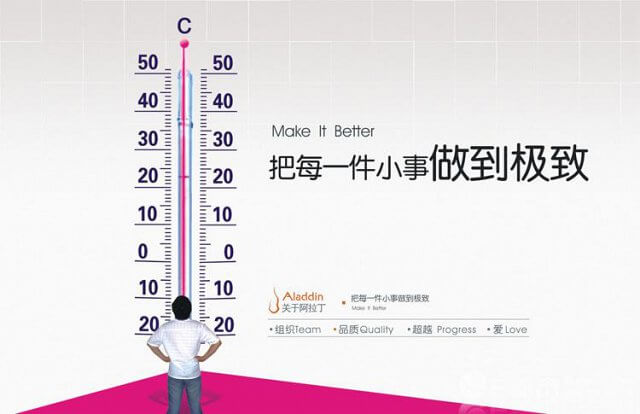

今天发生了一件坏事，也发生了一件好事
2015-02-06
1. 写在前面
以前读过两篇文章，一片叫《为什么从现在起你应该写博客》，第二篇记不得了，但其中有一个中心思想，说的是你写的东西都是给别人看的，应该都是对别人有用的。看了第一篇文章，我从不久之前终于借助Github建立了自己的一个博客，记录自己的技术成长经历；看了第二篇文章，我几乎每周都会对自己有一个总结，而从不把这些总结发到博客上。因为我认为这些总结都是未来回忆自己年轻时的年少轻狂用的，不应该发到博客上了。
但是今天，发生了一件坏事，算是从小到大最丑的一件事了，但同时也是一件好事。至少以后别人再问我最丑的经历时，我有话可说了。
2. 人生最丑的事
今天在小组内做第二次关于spark的技术分享，讲得很烂，算是人生的一个污点了，具体经历就不讲了。但我保证这是历史和未来所有presentation中最烂的一次。我将从以下几个方面来记录这次事件，以后每次活动之前，我都要自己看看今天的这篇文章，告诫自己，不要在同一个地方跌倒两次。
-
没有事先准备好
以后进行presentation，一定要提前半小时入场，把电脑环境配置好。今天失败的根本原因是一个自定义的配置文件在断网重连后没有进行source操作，导致IPython Notebook Server和Spark集群之间连接不上。 -
紧急情况下不会冷静分析问题
在启动IPython Notebook后，发现from pyspark import SparkContext, SparkConf不能成功，提示没有pyspark这个包。当时我就慌了，没有沿着本质去分析问题，然后在老板的催促和心慌当中就开始讲了，在大家的迷茫和我不知所以的回答中，我就这样浑浑噩噩的度过了几十分钟，中间还幸得一位同事解围。在最后几分钟的时候，我实在忍不住了，心想反正今天已经完蛋了，就不管别人在那里讨论什么了。我开始研究到底是什么原因导致Notebook Server连接不上spark集群。我首先查看了下IPython的配置，在~/.ipython/profile_pyspark/目录下面，我先看ipython_notebook_config.py文件，发现没有什么异常的，心想也应该不会出现在这里吧，因为IPython notebook还是能用的，只是找不到pyspark这个包。我突然回忆起来，在当初配置spark+IPython的时候，需要设置一个启动脚本文件。接着，我查看了那个启动脚本，在/root/.ipython/profile_pyspark/startup/00-pyspark-setup.py下，恍然大悟，我发现问题了，这个脚本是这样写的：
import os
import sys
spark_home = os.environ.get('SPARK_HOME', None)
if not spark_home:
raise ValueError('SPARK_HOME environment variable is not set')
sys.path.insert(0, os.path.join(spark_home, 'python'))
sys.path.insert(0, os.path.join(spark_home, 'python/lib/py4j-0.8.2.1-src.zip'))
#execfile(os.path.join(spark_home, 'python/pyspark/shell.py')) Say，关键就是这句 spark_home = os.environ.get('SPARK_HOME', None) 因为没有定义一个环境变量，因此不能在IPython Notebook的环境变量sys.path里加入pyspark包所在的地址。再想想自己在哪里定义了SPARK_HOME这个变量，明明就在Desktop下的ipython_notebook_spark.bashrc 里，看看里面是怎么写的：
export SPARK_HOME="/usr/local/spark-1.2.0-bin-cdh4/"
export PYSPARK_SUBMIT_ARGS="--master spark://10.21.208.21:7077 --deploy-mode client" 这下知道了，原因是自己定义的.bashrc文件在登出linux后会失效，而刚才把电脑带到会议室后重新连接的网络，linux console重新登出了，所以必须重新source这个文件。
现在回想，其实应该在看到错误提示没有pyspark这个包的时候就应该发现这个问题了，之所以一开始没有推测出这个问题，有几个原因：一是在这种情况下发现错误，头脑发热发慌，不能冷静处理；二是自己对这部分技术没有掌握彻底；3是在学习一门新技术时，没有详细地把学习过程和一些操作过程记录下来，导致出问题后不能及时参考。
-
表达不清
还有一条经验就是表达不清楚，思路不清楚，回答别人的问题不够明确。在别人提问没有表达清晰时，自己没有和别人进行沟通就贸然回答，导致交流效率极低。曾经看过很多文章，都讲做技术的一定要努力提高自己的表达能力，我满不在乎，因为平时和大家感觉交流起来还算流畅的，没想到这次碰了瓷。得到一条宝贵的经验，以后再做分享的时候，一定要准备好详细讲稿和提纲。别人在提问时，一定要先把别人提问的问题搞清楚，理解了再进行回答。 -
一些细节问题
这次分享出来本组人员，还有鹏哥和他们组的两个人员，这种情况下在开始前应该由主讲人[我]来互相介绍一下，介绍双方的人员和职责。
在讲稿，PPT，程序准备的时候，要注意配色和字体，字体要大，颜色要和谐，让听众能清晰地看到投影仪的东西。 -
最后
最后，我想说，这真的是人生最糟糕的一次经历，以后绝对不能出现同样的问题，在以后每次做分享的时候，我要多回头看看这篇文章，想想今天尴尬的我。今天的分享，远远没有达到预期效果，还耽误了大家不少时间，也影响了自己的形象。这种情况下不能逃避，我应该给参会的每个人员发封邮件表示歉意，这也是对别人的尊重。
3. 感悟
- 机会，永远只给有所准备，并且已经准备好了的人；
- 从每一件小事做起，把每一件小事做到极致； 
扫一扫